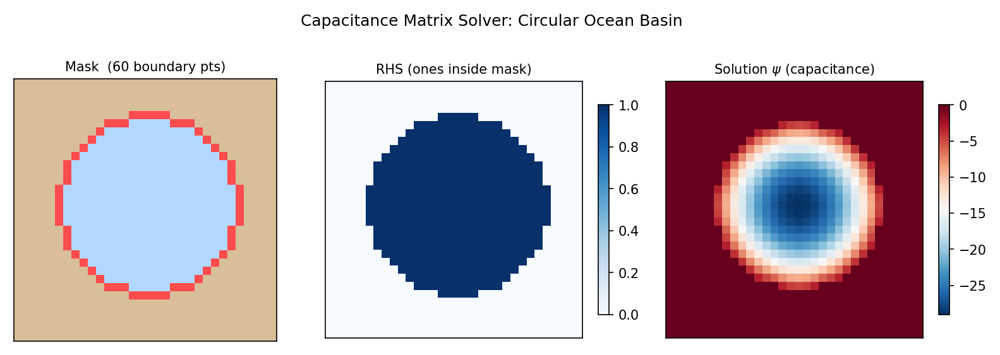

Capacitance Solver Guide¶
Practical guide for solving elliptic PDEs on masked/irregular domains using the capacitance matrix method in SpectralDiffX.
When to Use the Capacitance Solver¶
You have a masked domain -- an ocean basin with coastlines, a room with obstacles, or any region that is a subset of a rectangle. The fast spectral solvers (DST/DCT/FFT) require a full rectangle. The capacitance solver extends them to irregular domains by correcting for the boundary mismatch.
Use the capacitance solver when:
- Your domain is a subset of a rectangle defined by a boolean mask
- You want the speed of spectral methods (not iterative CG)
- The boundary perimeter is manageable (N_b < ~1000 points)
The Two-Phase Workflow¶
The capacitance method splits into an offline phase (expensive, done once) and an online phase (cheap, done many times).
import numpy as np
from spectraldiffx import build_capacitance_solver
# ----- Offline: build the solver (N_b spectral solves) -----
solver = build_capacitance_solver(
mask, # bool array [Ny, Nx]: True = interior
dx=1.0,
dy=1.0,
lambda_=0.0, # 0 for Poisson, >0 for Helmholtz
base_bc="dst", # "fft", "dst", or "dct"
)
# ----- Online: solve for any rhs (fast) -----
psi = solver(rhs) # rhs is [Ny, Nx], returns [Ny, Nx]
The solver object is an eqx.Module (a pure pytree). It stores the
pre-inverted capacitance matrix and precomputed Green's functions, so the
online solve is just one spectral solve plus a matrix-vector product.

Building a Mask¶
The mask is a 2-D boolean array where True marks interior (fluid) cells
and False marks exterior (land/wall) cells.
Example: circular basin in a rectangle¶
import numpy as np
Ny, Nx = 64, 64
j, i = np.mgrid[0:Ny, 0:Nx]
radius = 0.4 * min(Ny, Nx)
mask = ((j - Ny / 2)**2 + (i - Nx / 2)**2) < radius**2
Example: rectangle with a rectangular obstacle¶
Example: L-shaped domain¶
Inner boundary detection is automatic
You do not need to mark boundary points explicitly. The solver
automatically detects inner-boundary cells as mask-interior cells that
are 4-connected to at least one exterior cell (using
scipy.ndimage.binary_dilation with a cross-shaped structuring element).
Choosing base_bc¶
The base_bc parameter selects which rectangular spectral solver to use as
the "base" for the capacitance correction:
base_bc |
Base solver | Rectangle BCs | Notes |
|---|---|---|---|
"fft" |
solve_helmholtz_fft |
Periodic | Default. Good general choice. |
"dst" |
solve_helmholtz_dst |
Dirichlet | Natural if mask boundary touches rectangle edges. May give fewer boundary points near edges. |
"dct" |
solve_helmholtz_dct |
Neumann | Use if the outer rectangle should have zero-flux. |
All three produce the same result on the masked interior (the capacitance correction enforces psi = 0 at inner-boundary points regardless of the rectangular BC). The choice affects:
- Number of boundary points: DST may reduce N_b when the mask touches rectangle edges (since DST already enforces zero there)
- Null mode handling: FFT and DCT have a null mode at (0,0) for Poisson; DST does not
When in doubt, use base_bc=\"dst\"
For bounded physical domains where the solution is zero on the outer boundary, DST is the most natural choice and often gives the smallest N_b.
Memory and Performance¶
The offline phase performs N_b spectral solves and stores a dense Green's function matrix. The online phase is dominated by one spectral solve plus an N_b x N_b linear algebra step.
| Grid size | Typical N_b | Green's matrix size | Offline time | Online time |
|---|---|---|---|---|
| 32 x 32 | ~50-100 | ~100 KB | < 1 sec | < 1 ms |
| 64 x 64 | ~100-200 | ~3 MB | ~1 sec | ~1 ms |
| 128 x 128 | ~200-500 | ~30 MB | ~5 sec | ~2 ms |
| 256 x 256 | ~400-1000 | ~250 MB | ~30 sec | ~5 ms |
| 512 x 512 | ~800-2000 | ~2 GB | minutes | ~20 ms |
Rule of thumb: N_b ~ O(perimeter)
The number of inner-boundary points scales with the perimeter of the masked region, not its area. A 64x64 circular domain has N_b ~ 200 (circumference ~ 2pi25). A 64x64 square domain with one hole has N_b equal to the hole's perimeter.
Code Example: Ocean Basin¶
A complete worked example: create a circular ocean mask, build the capacitance solver, solve a Poisson equation, and verify.
import jax
import jax.numpy as jnp
import numpy as np
from spectraldiffx import build_capacitance_solver
jax.config.update("jax_enable_x64", True)
# --- Grid setup ---
Ny, Nx = 64, 64
dx, dy = 1.0, 1.0
# --- Create a circular ocean mask ---
j, i = np.mgrid[0:Ny, 0:Nx]
center_j, center_i = Ny / 2, Nx / 2
radius = 0.35 * min(Ny, Nx)
mask = ((j - center_j)**2 + (i - center_i)**2) < radius**2
print(f"Mask shape: {mask.shape}")
print(f"Interior points: {mask.sum()}")
# --- Build the solver (offline, one-time) ---
solver = build_capacitance_solver(
mask,
dx=dx,
dy=dy,
lambda_=0.0, # Poisson equation
base_bc="dst", # Dirichlet rectangle
)
print(f"Boundary points (N_b): {len(solver._j_b)}")
# --- Create a source term ---
j_jax = jnp.arange(Ny)[:, None]
i_jax = jnp.arange(Nx)[None, :]
rhs = jnp.sin(jnp.pi * (j_jax - center_j) / radius) * \
jnp.sin(jnp.pi * (i_jax - center_i) / radius)
rhs = rhs * jnp.array(mask, dtype=float) # zero outside mask
# --- Solve (online, fast) ---
psi = solver(rhs)
# --- Verify: psi should be ~0 at boundary points ---
boundary_values = psi[solver._j_b, solver._i_b]
print(f"Max |psi| at boundary: {jnp.max(jnp.abs(boundary_values)):.2e}")
# Should be ~1e-14 or smaller with float64
# --- Mask the exterior for visualization ---
psi_masked = psi * jnp.array(mask, dtype=float)
Batched Solves¶
Once built, the solver works with jax.vmap for batched right-hand sides:
import jax
# Stack of 10 right-hand sides
rhs_batch = jnp.stack([rhs * (k + 1) for k in range(10)]) # [10, Ny, Nx]
# vmap the online solve
solve_batch = jax.vmap(solver)
psi_batch = solve_batch(rhs_batch) # [10, Ny, Nx]
The offline precomputation is shared across all batch elements -- only the cheap online solve is repeated.
Limitations¶
Large N_b (> ~1000): consider iterative solvers
The Green's function matrix has size N_b x (Ny * Nx) and the capacitance matrix is N_b x N_b (dense). When N_b exceeds ~1000, memory and offline time become significant. For very fine grids or domains with long, convoluted boundaries, consider using an iterative solver (e.g., preconditioned CG in finitevolX) instead.
The capacitance matrix is dense
The inversion C_inv = np.linalg.inv(C) is performed with NumPy at
build time (not JIT-traced). This is O(N_b^3) and can be slow for
large N_b, but it only happens once.
Mask must have interior/exterior structure
If the mask is all True (no exterior cells), build_capacitance_solver
raises a ValueError because there are no inner-boundary points to
correct. In that case, just use the rectangular spectral solver directly.
scipy is required
The offline phase uses scipy.ndimage.binary_dilation for boundary
detection. Make sure scipy is installed.
Homogeneous BCs only
The capacitance method enforces psi = 0 at all inner-boundary points. For inhomogeneous Dirichlet BCs (psi = g on the boundary), you can subtract a known function that satisfies the boundary data and solve for the remainder.